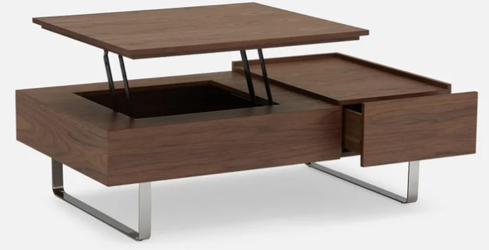
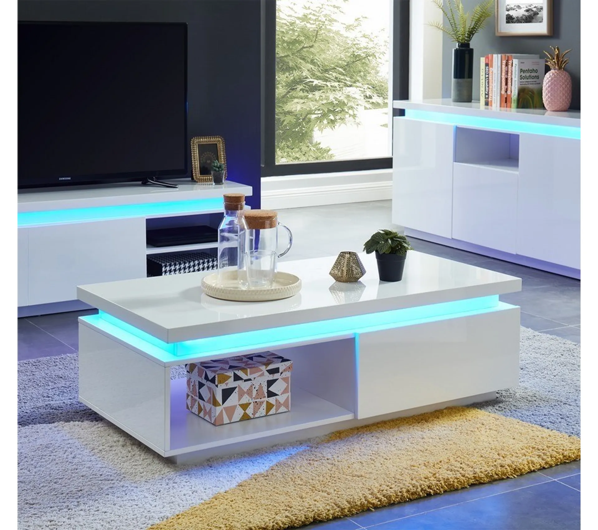

Carrée, rectangulaire, ronde ou ovale, la collection de tables basses se dévoile.
En bois, en verre, en métal ou en céramique elle s’adapte à chaque style unique et chic.
De la classique à celle qui range, jusqu'à l'extensible qui vous arrange,2/3 easter eggs
Des couleurs variées, des designs raffinés. Pour un salon parfait et bien agencé !
Du prix léger au plus élevé, il y en a pour tous budgets et idées.
 
Voici quelques idées pour décorer et choisir une table basse
Sur mon site se trouvent 3 easter eggs. À vous de les trouver !